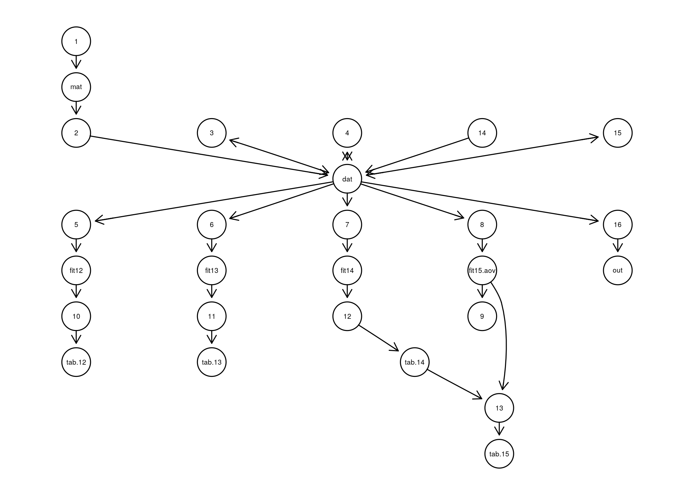

- Rclean was created to help scientists more easily write “cleaner” code.
- Written with research scientists that are results oriented in mind, the package’s primary function provides a simple way to isolate the minimal code you need to produce a specific result, such as a statistical table or a figure. By focusing on specific results (aka. variables), large and/or complicated analytical scripts can be paired down to the essentials and easily re-factored to be more robust and easily shared.
- Below, you’ll find a brief introduction to get you started using the package. For more details, see
vignette("Rclean").
Install
You can install the most up to date version easily with devtools:
You will also likely need to install the RGraphViz:
Once installed, per usual R practice just load the Rclean package with:
Usage
Rclean usage is simple. Have a script with code you want to clean saved to disk. Then, just run the clean function with the path to the script as the input. Here, we can use an example script that is included with the package:
Here’s a quick look at the code:
readLines(script)
#> [1] "## Make a data frame"
#> [2] "mat <- matrix(rnorm(400), nrow = 100)"
#> [3] "dat <- as.data.frame(mat)"
#> [4] "dat[, \"V2\"] <- dat[, \"V2\"] + runif(nrow(dat))"
#> [5] "dat[, \"V5\"] <- gl(10, 10)"
#> [6] "## Conduct some analyses"
#> [7] "fit12 <- lm(V1 ~ V2, data = dat)"
#> [8] "fit13 <- lm(V1 ~ V3, data = dat)"
#> [9] "fit14 <- lm(V1 ~ V4, data = dat)"
#> [10] "fit15.aov <- aov(V1 ~ V2 + V5, data = dat)"
#> [11] "## Summarize analyses"
#> [12] "summary(fit15.aov)"
#> [13] "tab.12 <- summary(fit12)"
#> [14] "tab.13 <- summary(fit13)"
#> [15] "tab.14 <- summary(fit14)"
#> [16] "tab.15 <- append(fit15.aov, tab.14)"
#> [17] "## Conduct a calculation"
#> [18] "dat <- 25 + 2"
#> [19] "dat[2] <- 10"
#> [20] "out <- dat * 2"You can get a list of the variables found in an object with get_vars.
get_vars(script)
#> [1] "mat" "dat" "fit12" "fit13" "fit14" "fit15.aov"
#> [7] "tab.12" "tab.13" "tab.14" "tab.15" "out"Sometimes for more complicated scripts, it can be helpful to see a network graph showing the interdependencies of variables. code_graph will produce a network diagram showing which lines of code produce or use which variables:

Now, we can pick the result we want to focus on for cleaning:
clean(script, "tab.15")
#> mat <- matrix(rnorm(400), nrow = 100)
#> dat <- as.data.frame(mat)
#> dat[, "V2"] <- dat[, "V2"] + runif(nrow(dat))
#> dat[, "V5"] <- gl(10, 10)
#> fit14 <- lm(V1 ~ V4, data = dat)
#> fit15.aov <- aov(V1 ~ V2 + V5, data = dat)
#> tab.14 <- summary(fit14)
#> tab.15 <- append(fit15.aov, tab.14)
#> dat <- 25 + 2
#> dat[2] <- 10We can also select several variables at the same time:
my.vars <- c("tab.12", "tab.15")
clean(script, my.vars)
#> mat <- matrix(rnorm(400), nrow = 100)
#> dat <- as.data.frame(mat)
#> dat[, "V2"] <- dat[, "V2"] + runif(nrow(dat))
#> dat[, "V5"] <- gl(10, 10)
#> fit12 <- lm(V1 ~ V2, data = dat)
#> fit14 <- lm(V1 ~ V4, data = dat)
#> fit15.aov <- aov(V1 ~ V2 + V5, data = dat)
#> tab.12 <- summary(fit12)
#> tab.14 <- summary(fit14)
#> tab.15 <- append(fit15.aov, tab.14)
#> dat <- 25 + 2
#> dat[2] <- 10While just taking a look at the simplified code can be very helpful, you can also save the code for later use or sharing (e.g. creating a reproducible example for getting help) with keep:
If you would like to copy your code to your clipboard, you can do that by not specifying a file path. You can now paste the simplified as needed.
Contributing
This is an open-source project. If you would like to contribute to the project, please check out CONTRIBUTING.md.
Please note that the ‘Rclean’ project is released with a Contributor Code of Conduct. By contributing to this project, you agree to abide by its terms.